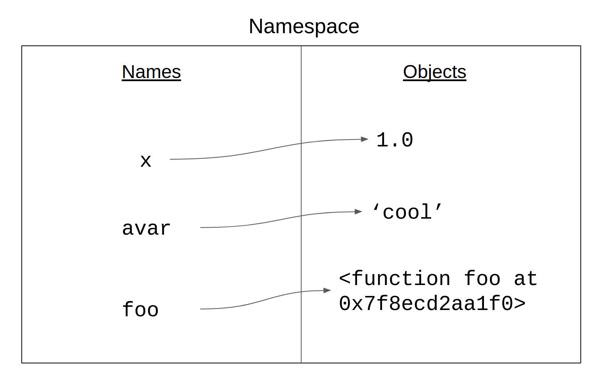
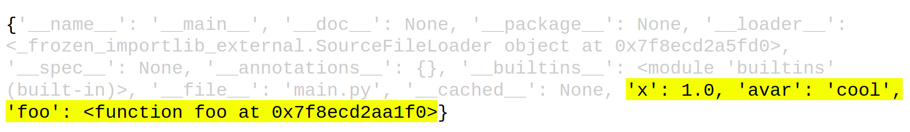
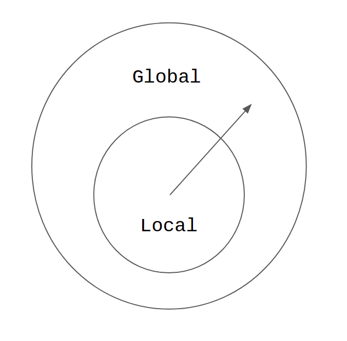
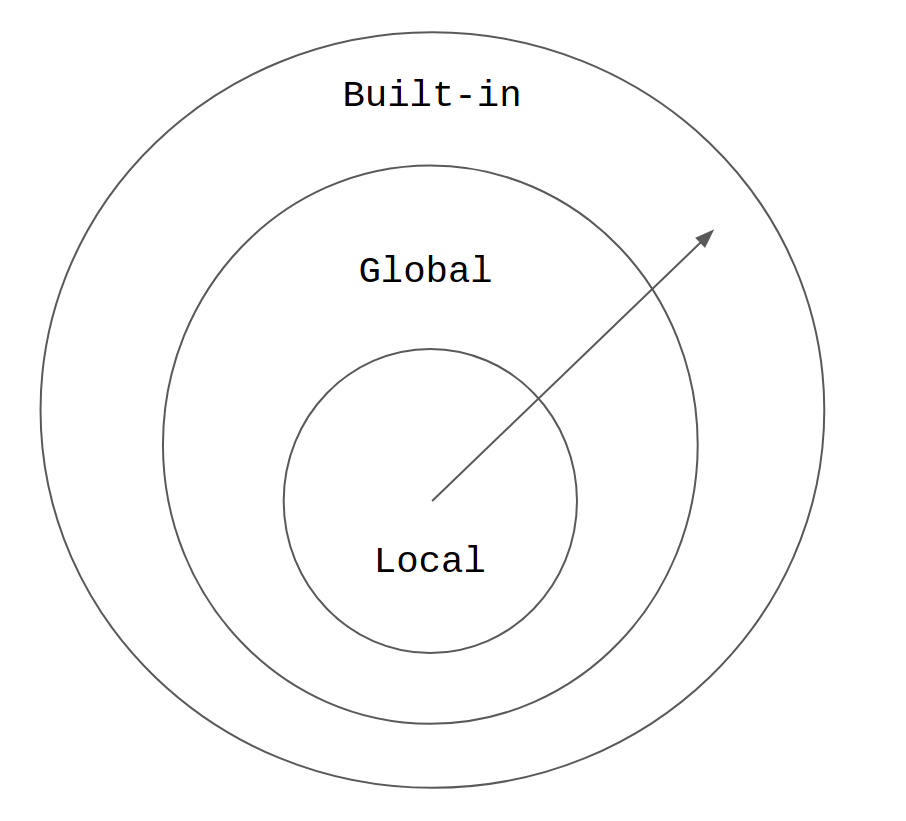

Lesson-4.3
Scope
Consider the following code:
def foo():
x = 1
print('This is a veritable fortress. None can enter here.')
print('\N{smirking face}')
foo()
print(x)This will give the following output:
This is a veritable fortress. None can enter here.
😏
Traceback (most recent call last):
File "main.py", line 7, in <module>
print(x)
NameError: name 'x' is not definedWhy did the interpreter throw an an error in line-7? It tried to look for the name x and was unable to find it. But isn’t x present in the function foo? Is the interpreter careless or are we missing something? The interpreter is never wrong! The region in the code where a name can be referenced is called its scope. If we try to reference a variable outside its scope, the interpreter will throw a NameError.
Local vs Global
In the above example, the scope of the name x is local to the function; x has a meaningful existence only inside the function and any attempt to access it from outside the function is going to result in an error. Think about functions as black holes: they don’t let variables (light) escape the function’s definition (event-horizon)! Let us take another example:
The name y is accessible from within the function as well. We say that the scope of y is global. That is, it can be referenced from anywhere within the program — even inside a function — after it has been defined for the first time. There is a slight catch here: if another variable with the same name is defined within the function, then things change. We will take up this case later.
At this stage, we are ready to formulate the rules for local and global variables [refer]:
Local: Whenever a variable is assigned a value anywhere within a function, its scope becomes local to that function. In other words, whenever a variable appears on the left side of an assignment statement anywhere within a function, it becomes a local variable.
Global: If a variable is only referenced inside a function and is never assigned a value inside it, it is implicitly treated as a global variable.
The scope of the parameters in the function definition are local. The following code will throw a NameError when executed:
Examples
Let us now look at few more examples that bring out some fine points regarding local and global scope:
### Variant-1
def foo():
x = 1
print('I can access both x and y')
print(f'x = {x}, y = {y}')
y = 10
foo()Notice the difference between this code and the one at the beginning of the earlier section. Here, the variable y is defined after the function definition, while in the earlier version y was defined before the function definition. But both versions give the same output. All that matters is for y to be defined before the function call. What happens if y is defined after foo is called?
### Variant-2
def foo():
x = 1
print('I can access both x and y')
print(f'x = {x}, y = {y}')
foo()
y = 10This throws a NameError at line-5, which is reasonable as y is not defined in the main program before foo is called. The scope of y is still global; it can be referenced anywhere in the program once it has been defined.
Now, let us crank up the difficulty level:
We have the same name — x — appearing inside the function and outside the function. Are they the same or different? Let us check the output:
x inside foo = 10
x outside foo = 100They are different! The x inside foo is different from the x outside foo.
- The scope of the name
xinsidefoois local; it is a local variable. This is because of the first rule: a variable that is assigned a value inside the function becomes a local variable. Sincexis assigned a value in line-2, it becomes a local variable. - The scope of the
xoutsidefoois global. Though there is anotherxinside the functionfoo, that cannot be accessed outside the function.
This may start to get a little confusing. How does Python internally manage local and global variables? For this, we will briefly turn to the concept of namespaces. This will give a different perspective to the problem of name resolution.
Namespaces
Consider the following snippet of code:
We have used three different names here: x, avar and foo. The first two names represent variables that store literals. The last name represents a function. How does the Python interpreter internally process these names? It uses a concept called namespaces. A namespace can be thought of as a lookup table — dictionary to be precise — that maps names to objects.

globals()
There are different types of namespaces. The variables that we define in the main program are represented in the globals namespace. For example:
This returns the following output:

Ignore all the other details and just focus on the region highlighted in yellow. Notice that the names x, avar and foo are present in the namespace. x and avar are mapped to the objects 1 and cool respectively, while foo is mapped to some complex looking object: <function foo at 0x7f8ecd2aa1f0>. The number 0x7f8ecd2aa1f0 is the location in the memory where the function’s definition is stored [refer]. There is another way to check whether a given name is in a namespace:
All three lines result in True.
locals()
Notice something interesting in the previous code, the name y is not found in the globals namespace! We can verify this as follows:
This results in False. Variables that are assigned a value inside a function are local to the function and cannot be accessed outside it. How does the Python interpreter handle names inside functions? It creates a separate namespace every time a function is called. This is called a local namespace. Now, consider the following code:
def foo():
y = 2.0
print('Is y in locals?', 'y' in locals())
foo()
print('Is y in globals?', 'y' in globals())It returns the following output:
Is y in locals? True
Is y in globals? FalseScope and Namespaces
For every function call, the interpreter creates a local namespace that contains all names and their corresponding objects that are defined in the function. Let us take an example:
This gives the output:
10
{}
{'x': 1}Since y is only being referenced inside foo, it doesn’t become a part of the local namespace. It remains a global variable. Since x is being assigned a value inside foo, it is a local variable and therefore enters the local namespace. The moment control exits the function, the namespace corresponding to it is deleted.
Whenever the interpreter comes across a name in a function it sticks to the following protocol:
- First peep into the local namespace created for that function call to see if the name is present in it. If it is present, then go ahead and use the value that this variable points to in the local namespace.
- If it is not present, then look at the global namespace. If it is present in the global namespace, then use the value corresponding to this name.
- If it is not present in the global namespace, then look into the
built-innamespace. We will come back to thebuilt-innamespace right at the end. - If it is not present in any of these namespaces, then raise a
NameError.
The following image captures this idea. The built-in namespace has been ignored for now. Refer to the last section to get the complete image.

With this context, let us revisit the problem that we looked at the end of the first section:
When the function is called at line-6, the interpreter creates a local namespace for foo. At line-2, x becomes a part of this namespace. When x is referenced at line-3, the interpreter first looks at the local namespace for foo. Since x is present there, it is going to use the value corresponding to it - in this case 10. Once control exits the function, the local namespace corresponding to it is deleted. At line-7, the interpreter will replace the name x with the value 100 which is present in the global namespace.
global keyword
Let us revisit the scope rules:
Local: Whenever a variable is assigned a value anywhere within a function, its scope becomes local to that function. In other words, whenever a variable appears on the left side of an assignment statement anywhere within a function, it becomes a local variable.
Global: If a variable is only referenced inside a function and is never assigned a value inside it, it is implicitly treated as a global variable.
Consider the following code:
When the above code is executed, we get the following error: UnboundLocalError: local variable 'x' referenced before assignment [refer]. This code violates the first rule. x is being assigned a value in line-3 of the function; hence it becomes a local variable. At line-2 we are trying to reference a value that is yet to be defined. Note that the assignment statement in line-5 doesn’t count as the x there is not local to foo, but is a global variable.
But what if we want to reuse the global variable x inside the function foo? Python provides a keyword called global for this purpose:
def foo():
global x
print(f'x inside foo = {x}')
x = x + 1
print(f'x inside foo = {x}')
x = 10
print(f'x outside foo = {x}')
foo()The output is:
x outside foo = 10
x inside foo = 10
x inside foo = 11By declaring x to be global inside foo, a new local variable x is not created even though it appears to the left of an assignment statement in line-4.
Built-ins
So far we have been freely using built-in functions like print, int, input and so on. At some level, these are also names in Python and these also get resolved during run-time. There is a separate namespace called builtins where these functions are defined.
Consider the following code:
If the above code is executed, we don’t get an error! This is somewhat surprising. But syntactically, there is nothing wrong here. But we will get into serious problems when we try to do the following:
This will throw a TypeError. The name print has been hijacked and is being used as an int variable. How does Python allow this to happen?

When resolving names, the built-in namespace is the last stage in the interpreter’s journey. Syntactically, nothing prevents us from using the name of a built-in function, such as print, as the name of a variable. But this is a very bad practice that should be avoided at any cost!